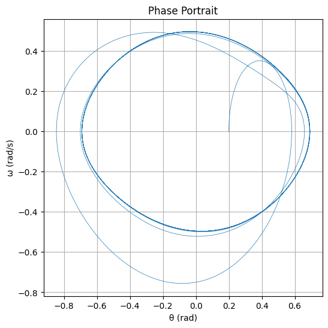
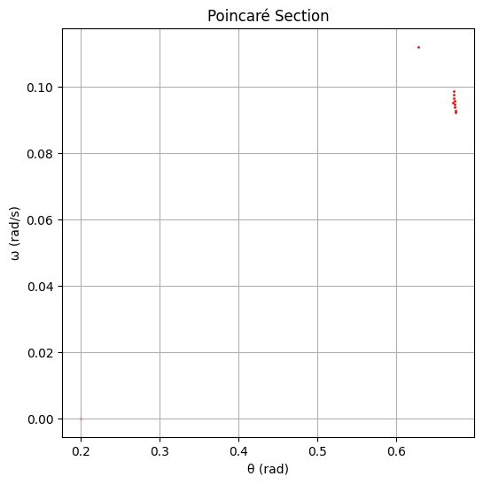

Problem 2
🧭 Forced Damped Pendulum: From Periodic Motion to Chaos 1. 🎓 Theoretical Foundation Governing Equation The motion of a forced damped pendulum is described by the nonlinear differential equation:
𝑑 2 𝜃 𝑑 𝑡 2 + 𝛽 𝑑 𝜃 𝑑 𝑡 + 𝜔 0 2 sin 𝜃 = 𝐴 cos ( 𝜔 𝑡 ) dt 2
d 2 θ +β dt dθ +ω 0 2 sinθ=Acos(ωt) Where:
𝜃 ( 𝑡 ) θ(t): angle of displacement
𝛽 β: damping coefficient
𝜔 0 = 𝑔 / 𝐿 ω 0 = g/L : natural frequency of the pendulum
𝐴 A: amplitude of the external driving torque
𝜔 ω: driving frequency
Small-Angle Approximation For small angles ( sin 𝜃 ≈ 𝜃 sinθ≈θ), the equation simplifies to:
𝑑 2 𝜃 𝑑 𝑡 2 + 𝛽 𝑑 𝜃 𝑑 𝑡 + 𝜔 0 2 𝜃 = 𝐴 cos ( 𝜔 𝑡 ) dt 2
d 2 θ +β dt dθ +ω 0 2 θ=Acos(ωt) This is a driven damped harmonic oscillator, and it has a steady-state solution:
𝜃 ( 𝑡 ) = 𝜃 steady ( 𝑡 ) = 𝐵 cos ( 𝜔 𝑡 − 𝛿 ) θ(t)=θ steady (t)=Bcos(ωt−δ) Where:
𝐵
𝐴 ( 𝜔 0 2 − 𝜔 2 ) 2 + 𝛽 2 𝜔 2 B= (ω 0 2 −ω 2 ) 2 +β 2 ω 2
A
𝛿
tan − 1 ( 𝛽 𝜔 𝜔 0 2 − 𝜔 2 ) δ=tan −1 ( ω 0 2 −ω 2
βω )
Maximum amplitude occurs at resonance:
𝜔 res = 𝜔 0 2 − 𝛽 2 2 ω res = ω 0 2 − 2 β 2
- 🔬 Dynamics Analysis Influence of Parameters: Damping 𝛽 β: suppresses motion, reduces peak amplitude.
Driving Amplitude 𝐴 A: higher values can push system into chaotic regimes.
Driving Frequency 𝜔 ω: determines whether motion is synchronized or chaotic.
Types of Behavior: Periodic: motion repeats over time.
Quasiperiodic: complex oscillation without repetition.
Chaotic: sensitive dependence on initial conditions; no clear pattern.
- 🌍 Practical Applications Energy Harvesting: devices convert oscillations into electrical energy.
Engineering Structures: bridges, buildings under periodic forces.
RLC Circuits: analogous equations describe voltage/current.
Biomechanics: modeling leg movement in walking (e.g., gait analysis).
- 💻 Implementation (Python) Here’s a Python script using scipy.integrate.solve_ivp to simulate and visualize behavior:  
- 🧩 Advanced Visualizations Phase Portrait: reveals oscillatory and chaotic states.
Poincaré Section: reveals regular vs chaotic motion.
Bifurcation Diagram (optional): plot 𝜃 θ vs driving force/frequency to study transitions.
- ⚠️ Limitations and Extensions Limitation Suggested Extension Ignores nonlinear damping Add − 𝛼 𝜔 2 −αω 2 term Periodic force only Introduce random or pulsed forcing Single pendulum Study coupled pendulums or pendulum on cart No energy input/output tracking Track system energy: 𝐸 ( 𝑡 ) E(t)
✅ Deliverables Summary Component Description Theoretical Derivations Small-angle solutions + resonance Code Implementation RK45 simulation of pendulum Graphical Output θ(t), phase plot, Poincaré section Dynamic Analysis How parameters affect motion Limitations & Extensions Chaos, real-world constraints